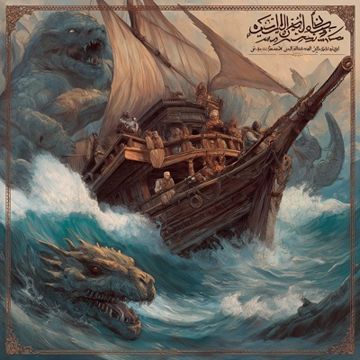

Embark on an epic voyage with “Voyages of the Stormbringer”, a metal odyssey inspired by the legendary adventures of Sinbad the Sailor. From the moment the ship departs in “Prologue: The Harbor of Destiny”, listeners are swept into a world of towering giants, monstrous sea serpents, and mystical Jinn. This album blends crushing riffs, soaring melodies, and cinematic atmospheres to bring the myths of Arabian Nights to life, transforming timeless tales into an electrifying sonic journey.
Each track tells a chapter of Sinbad’s story. Battle titanic creatures on “The Island of Giants”, face the wrath of colossal storms in “Storms of the Seven Seas”, and navigate the shadowy deceit of cunning merchants in “The Trader’s Deception”. Mystical encounters with spirits and magic are captured in “Whispers of the Jinn”, while “Voyager’s Triumph” delivers the climactic celebration of courage and survival. The album is a full narrative experience, where every riff, drum, and vocal line embodies the peril, wonder, and heroism of Sinbad’s legendary journeys.